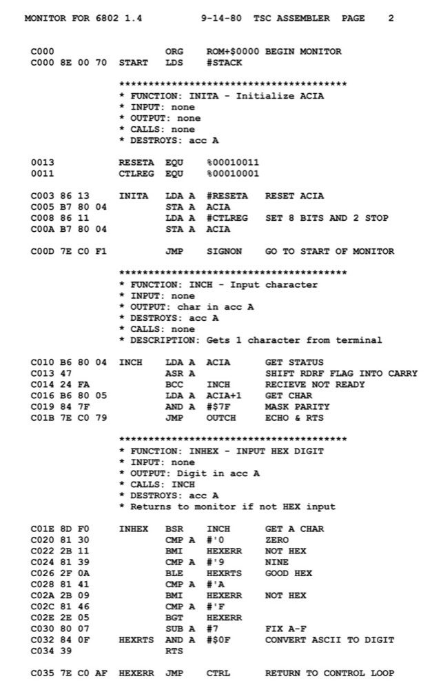
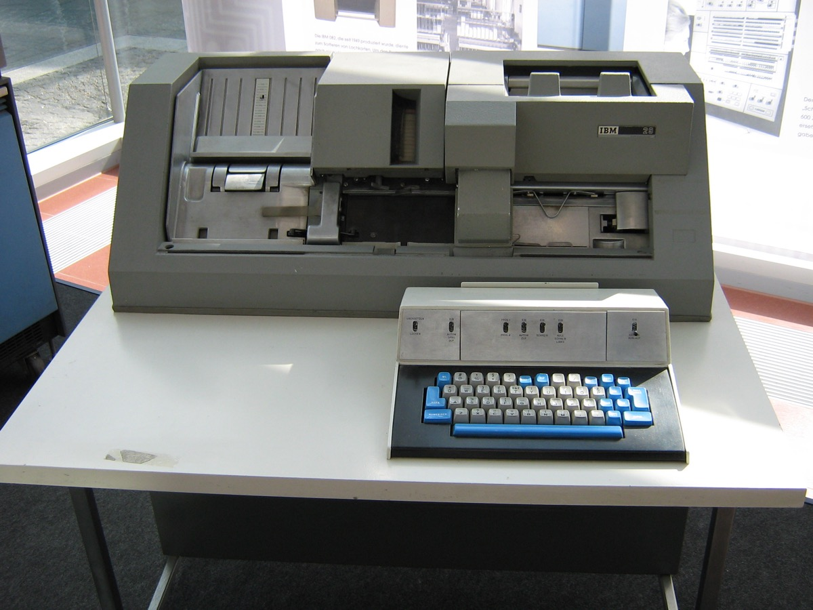
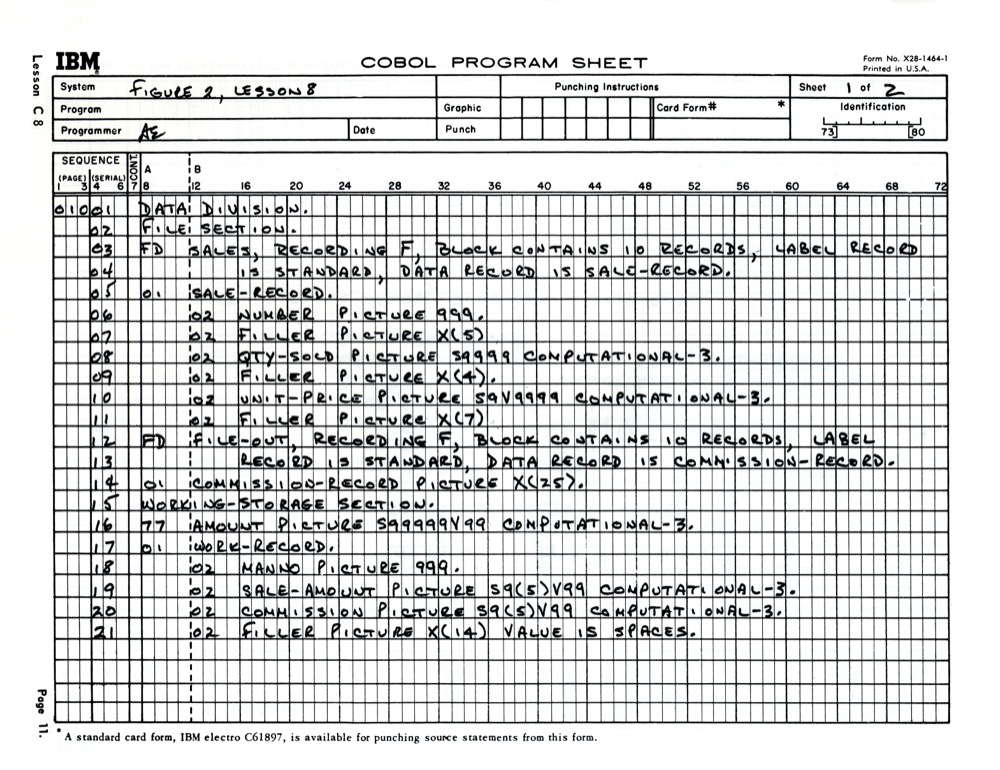
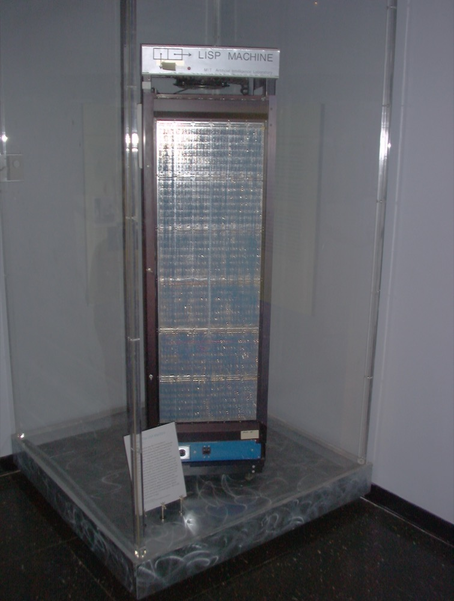
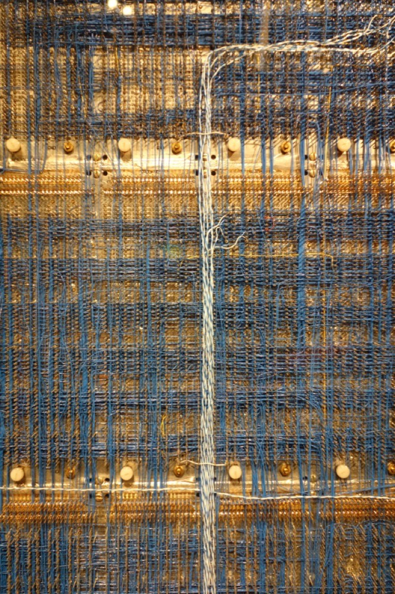
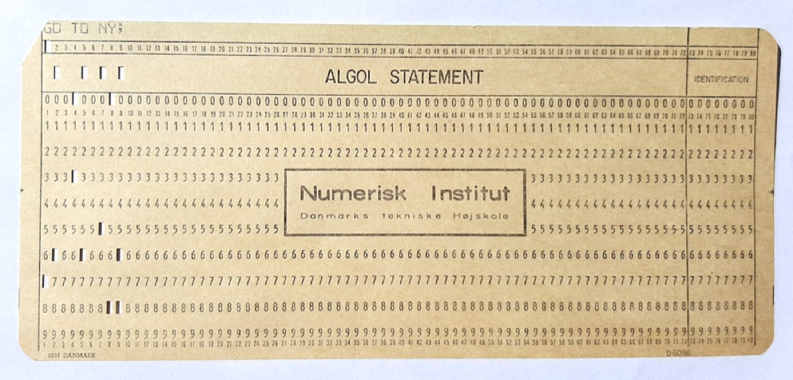

代码考古博物馆 / Code Archaeology Museum
欢迎来到代码考古博物馆 / Welcome to the Code Archaeology Museum
欢迎来到代码考古博物馆 / Welcome to the Code Archaeology Museum
ENIAC was the first general-purpose electronic digital computer, programmed via patch cables and switches.
Machine code and assembly language laid the foundation for all modern programming.


FORTRAN was the first widely used high-level programming language, designed for scientific computing.
COBOL was designed for business data processing and is still in use today.



LISP pioneered AI research and symbolic computation.

ALGOL 60 pioneered structured programming concepts.
BASIC democratized programming for beginners.
C is the fundamental systems programming language.
SQL changed how humans manage and query data.
C++ extended C with object-oriented programming.
Python focuses on readability and versatility.
Java is the 'write once, run anywhere' enterprise language.
JavaScript is the scripting language of the web.
C# is Microsoft's multi-paradigm programming language.
Go is a statically typed language for cloud-native computing.
Rust is a memory-safe systems programming language.
TypeScript adds static type checking to JavaScript.
AI code generation tools are reshaping programming.
From this future AI perspective, all these programming languages are archaeological artifacts from a bygone era.
Future generations may never write code manually. They will describe what they want, and AI will bring it to life.
The languages showcased here represent the foundation upon which the AI revolution was built.